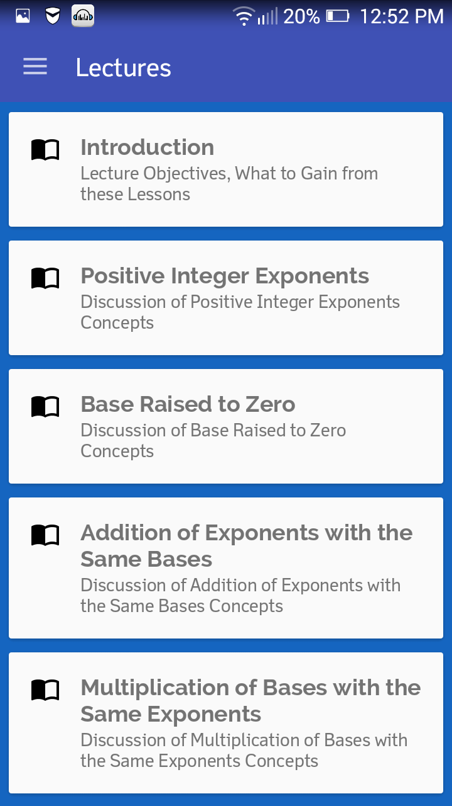
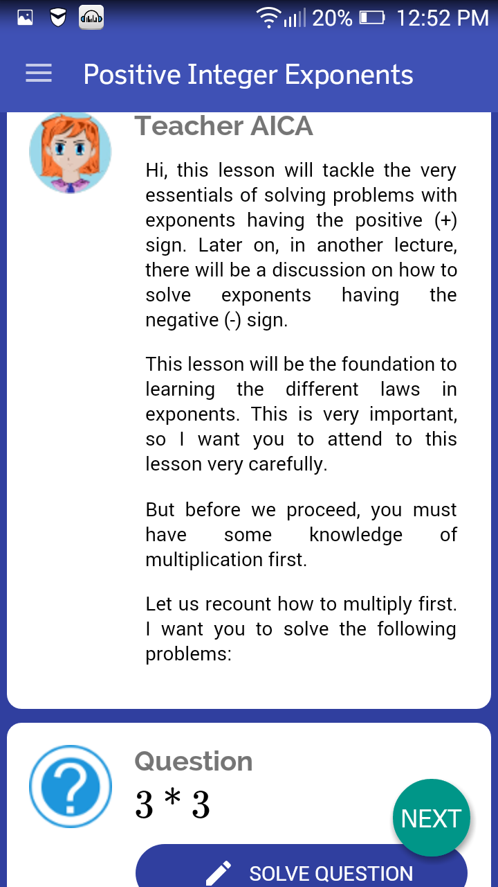

Lecture Section Manual
Like all classroom settings, Teacher AICA will take you to an environment
where you will be taught by a teacher, guided by a teacher, and tested by the teacher.
In this section, will guide you how to use the Lecture section.
You just follow the step to guid you.

after you tap the Navigation Menu,
tap "Lectures".

After you top the Lecutures, you will see this screen
that you can choose a Lecture topic you want to read. For example, you want to read a topic about "Postive Integer Exponents"
you just top it.

Now this is will you see. Teacher AICA will Discuss the Topic about Postive Integer Exponents. There are some quiz in this lecture and you must to solve for your reviewer.
Then tap Next to prceed.
If you want to go back, tap the navigation menu.